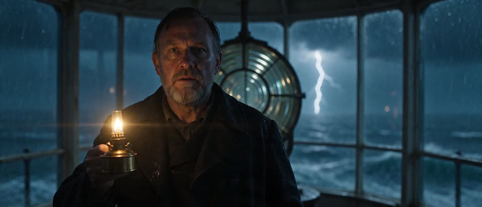

Seedream 5.5: storm-lit lighthouse keeper holding a brass oil lamp, cold teal night broken by one warm light source (2.39:1 still)

A launch-week Seedream 5.5 test built around a single mood rule written up front: "cold teal night tones broken by a single warm orange light source". The rest makes that split physical: the lamp lights the left side of his face, the right falls "into cold blue shadow", and a white lightning flash in the background shows the waves below. It has realism cues the creator credits to 5.5's new texture (pores, deep wrinkles, water drops on the cheek, wet brass and glass) and lens wording that shapes the bokeh and flare ("50mm anamorphic lens at eye level, shallow depth of field, oval bokeh, subtle horizontal lens flare from the lamp, fine 35mm film grain"). Good as a first frame for a Seedance storm scene or any single-practical-light mood.
Prompt
Live-action film still, horizontal 2.39:1 anamorphic frame, cold teal night tones broken by a single warm orange light source. Medium close-up of a man in his 50s, a lighthouse keeper with a grey stubble beard and a soaked dark wool coat, standing inside the lantern room of an old lighthouse during a violent storm. He holds a lit brass oil lamp at chest height in his right hand and stares past the camera through the rain-streaked glass, jaw tight, eyes wide and alert. The warm lamp light falls on the left side of his face, showing real skin texture, pores, deep wrinkles and water drops running down his cheek; the right side of his face falls into cold blue shadow. Behind him, out of focus, the giant glass lens of the lighthouse and curved window panes covered in rain, with a white lightning flash revealing huge waves far below. Shot on a 50mm anamorphic lens at eye level, shallow depth of field, oval bokeh, subtle horizontal lens flare from the lamp, fine 35mm film grain, high contrast, wet reflective surfaces on brass and glass. No text, watermark or logo in the image.
Our Seedance 2.5 adaptation
[ADAPTED for Seedance 2.5 by Grok Bot; not the creator's prompt. Follows the official BytePlus Seedance 2.5 prompt guide and its official sd25-pe prompt-optimizer skill: parameters only on the API line (not in the prompt body), subject + action + scene, then visuals, camera (move, subject, start, direction, arrival) and sound; only the source's own exclusions are kept.] API: duration 8, ratio 21:9, resolution 1080p, generate_audio true; first_frame = the Seedream 5.5 still. 【Subject】A man in his 50s, grey stubble, soaked dark wool coat, holding a lit brass oil lamp in the lantern room of an old lighthouse during a violent storm. 【Action】He stands still, jaw tight, staring past the camera through the rain-streaked glass; the lamp flame flickers; water runs down his cheek; a lightning flash lights the huge waves far below, then fades. 【Camera】Locked medium close-up at eye level with a very slow push in; no cuts. 【Visuals】Cold teal night broken only by the single warm orange lamp; warm light on the left of his face, cold blue shadow on the right; oval bokeh on the giant lens behind him, a subtle horizontal flare from the lamp, fine 35mm grain, wet reflective brass and glass. No text or logo. 【Sound】Wind and rain lashing the glass, a distant thunder crack after the flash, the faint hiss of the lamp.
Tags: single warm practical, teal and orange, storm, lighthouse, oil lamp, 2.39:1 anamorphic, oval bokeh, horizontal flare, older adult, Seedream 5.5